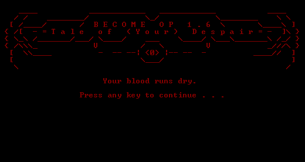
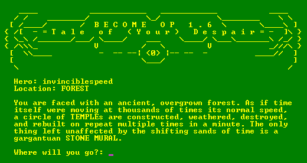
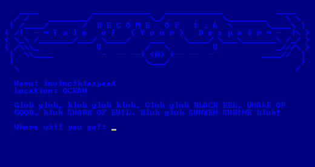

"Very funny and well written. Every time you think you might be close to the end, the locations you can explore practically double and you find yourself with more to do and in more dangerous situations than ever before. 9/10" - A local banana

"Become OP is a ridiculous, zany, and sometimes infuriating experience. Like dark souls but good, and also nothing like dark souls. 9/10" - Playtester Ken
"A witty adventure game you won't find anywhere else. 8/10" - Playtester mikah

"If you judge the quality of a game by play time then practically every NES, Atari, and arcade game would be a ten out of ten. This game? 10/10" - Anonymous Playtester
"A text adventure game with a surprising amount of variety. There are puzzles, minigames, plenty of combat encounters, and a shockingly potent story. 9/10" - Anonymous Playtester

RATED 9/10 OVERALL